For this assignment I copied Project 2 (Giga Pets) into a new repository and added Chrome DevTools examples to it.
I added a DevTools Lab panel under the game. Its buttons trigger each demo.
The logging code is in two places. script.js logs real game events, such as each button press, a very hungry pet, or a starving pet.
devtools.js has the console method demos and the code that makes the browser log a 404, a TypeError, and a Violation.
console.log() / console.info()When the page loads, runConsoleDemos() logs how many pets were loaded with console.log(). It logs the selected pet with console.info().
Every game button also calls logActionToConsole(). It uses console.info() to log the pet's new weight, happiness, and hunger.
console.info('[Giga Pets] ' + action + ' -> ' + pet_info['name'] + ': weight ' + pet_info['weight'] + ...);
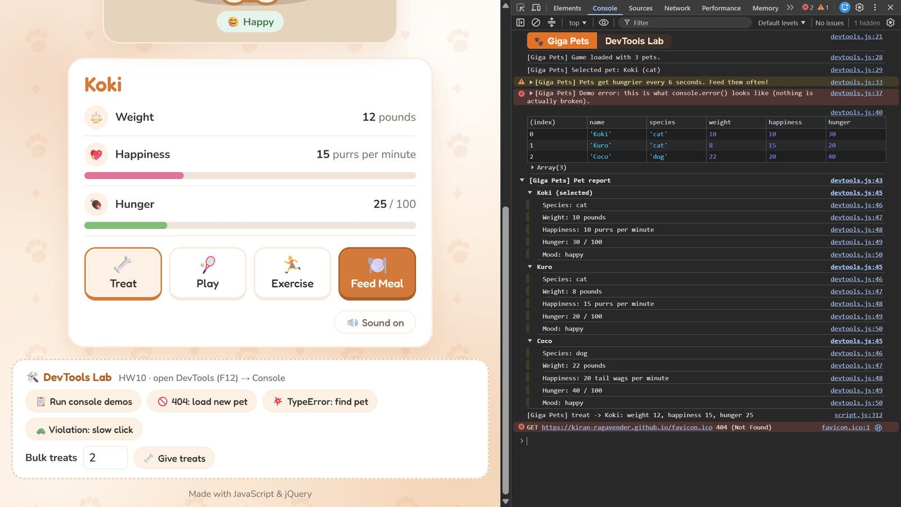
console.warn()A warning is logged on page load about how fast the pets get hungry. The game also logs one when a pet's hunger reaches 75, its weight hits 0, or its happiness hits 0. Chrome shows warnings with a yellow background and a stack trace you can expand.
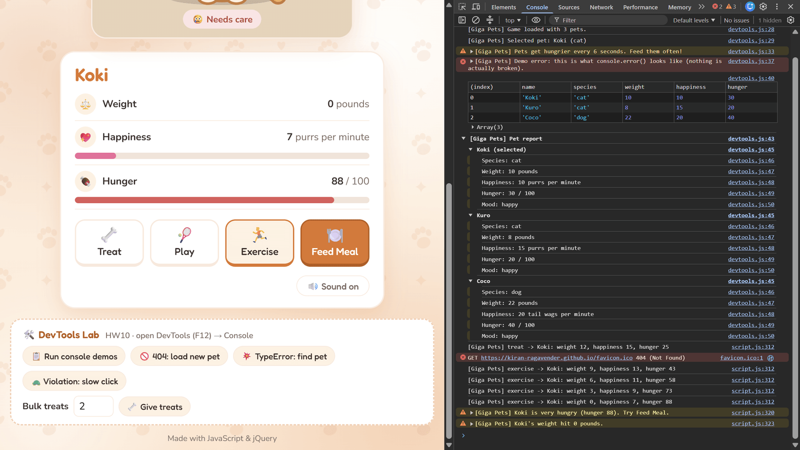
console.warn(), including "Koki is very hungry".console.error()The game logs an error when the selected pet is starving (hunger 100), either after a button press or when hunger rises on its own in passTime().
The demo also logs one example error on load.
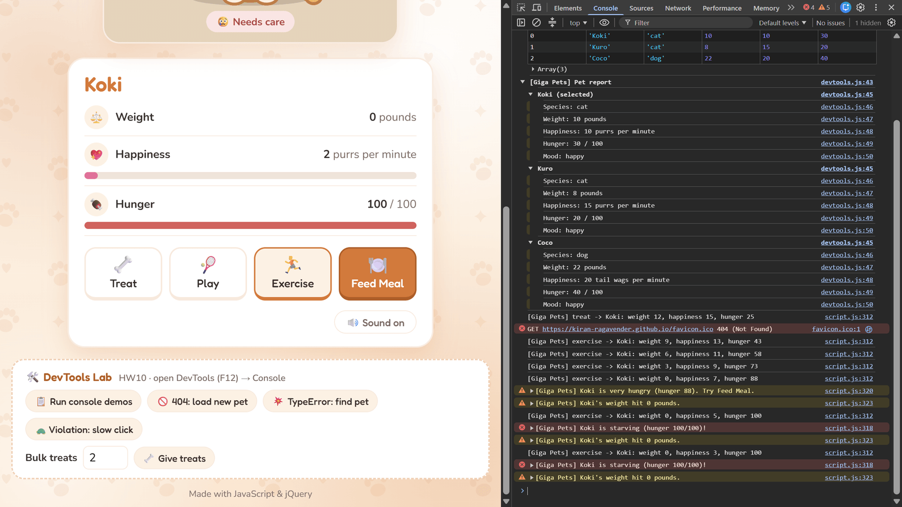
console.error(), shown in red.console.table()The pets array holds Pet objects. It is logged as a table that shows only the useful columns:
console.table(pets, ['name', 'species', 'weight', 'happiness', 'hunger']);
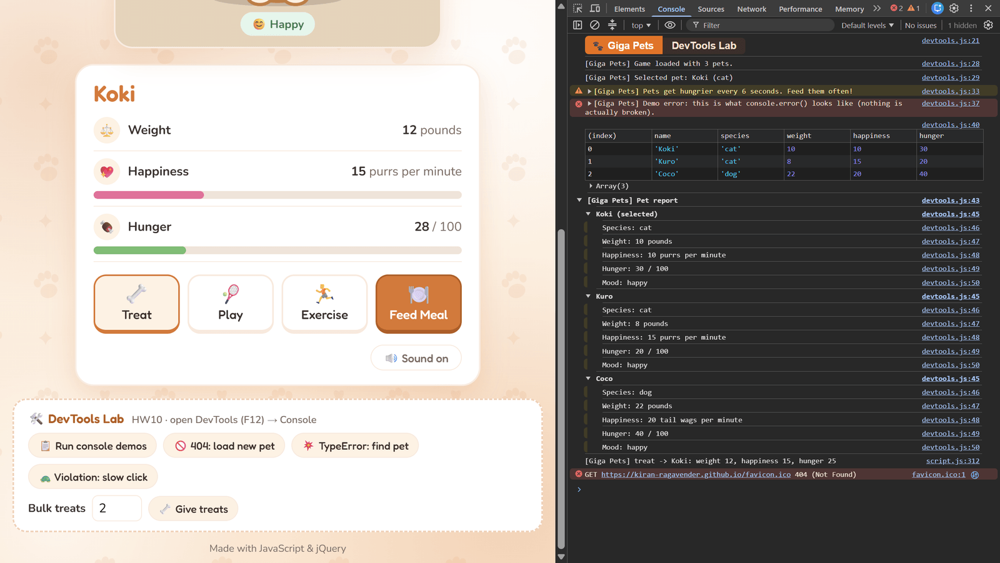
console.group() / console.groupEnd()A "Pet report" group holds one group for each pet, with that pet's species, weight, happiness, hunger, and mood. Each console.group() is closed with console.groupEnd().
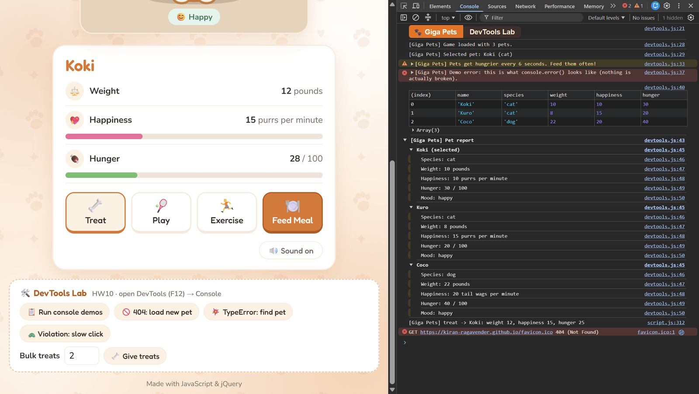
%cEach %c applies the CSS string in the next argument to the text after it. Here it draws a two-color "Giga Pets / DevTools Lab" banner in the game's colors and font.
console.log('%c🐾 Giga Pets %c DevTools Lab ', 'background:#e0742a; color:white; ...', 'background:#3b2f2a; color:#ffe6cf; ...');
🚫 404: load new pet fetches images/mochi.svg for a fourth pet, but that file doesn't exist.
The browser logs GET …/images/mochi.svg 404 (Not Found). Then my code logs its own console.error() with the status.
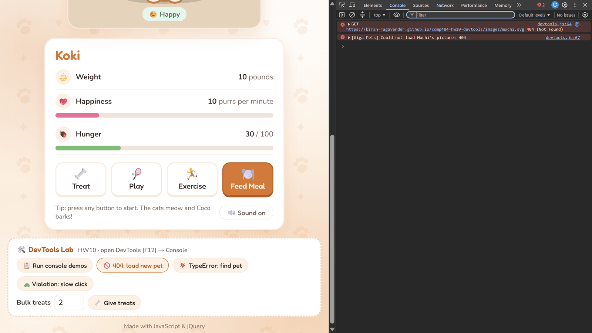
💥 TypeError: find pet looks for "Mochi" in pets with .find(). Mochi isn't there, so .find() returns undefined.
Then the code reads pet.name. The error is left uncaught on purpose, so the browser logs
Uncaught TypeError: Cannot read properties of undefined (reading 'name').
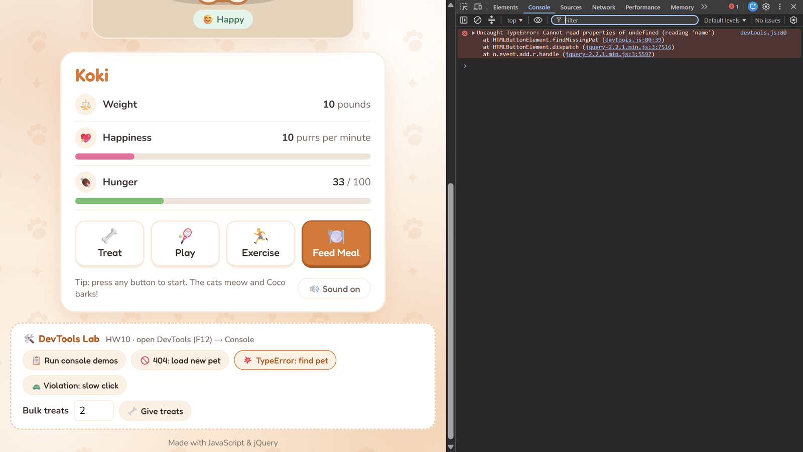
🐢 Violation: slow click runs a click handler that busy-waits for about 600 ms. This blocks the main thread.
Chrome logs [Violation] 'click' handler took ___ms.
Violations are Verbose level messages, so I turned on Verbose in the Default levels menu to see them.
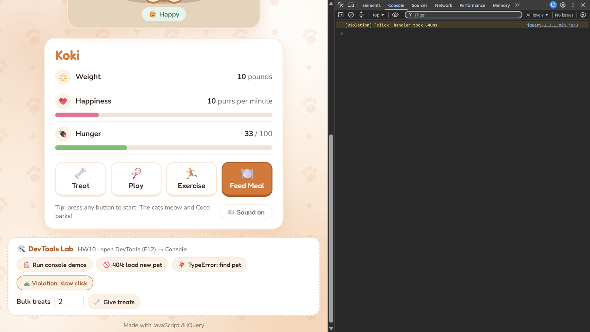
The Default levels menu shows or hides Verbose, Info, Warnings, and Errors. In this screenshot only Warnings and Errors are checked.
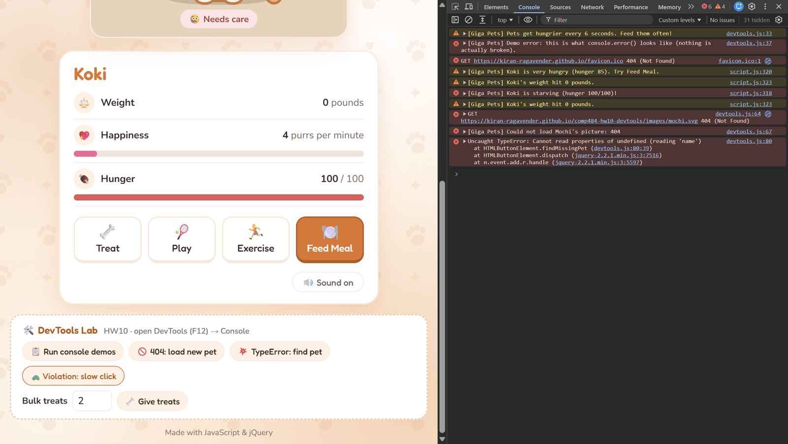
Typing Koki in the Filter box hides every message that doesn't contain that text.
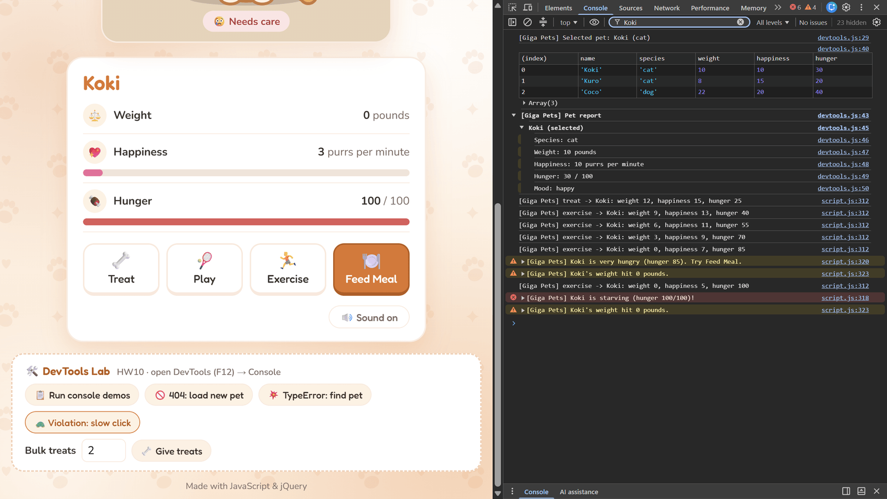
Text between slashes is read as a regular expression. /(hungry|starving)/ keeps only messages about hunger problems.
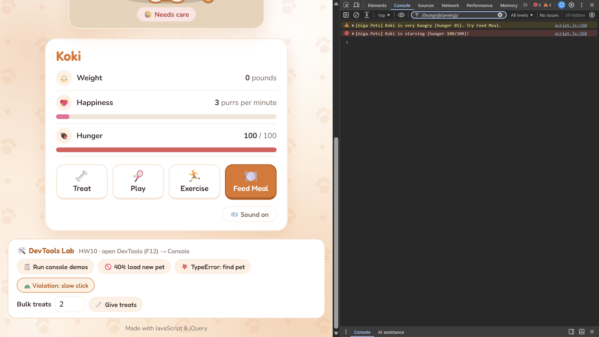
/(hungry|starving)/.Under Show console sidebar, each URL group lists messages by the file that logged them. Selecting devtools.js shows only messages from that script.
The Filter box also takes url:devtools.js, and -url: hides a source.
I also used the Hide network setting to remove browser network messages like the 404.
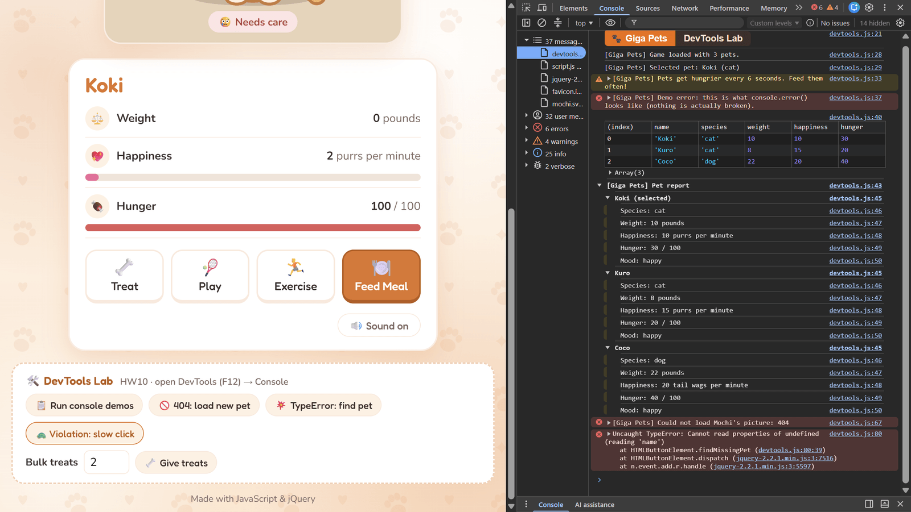
The sidebar's user messages entry shows only messages that came from page JavaScript calling the console API. Browser messages are hidden, such as the 404 network error, the Violation, and the uncaught TypeError.
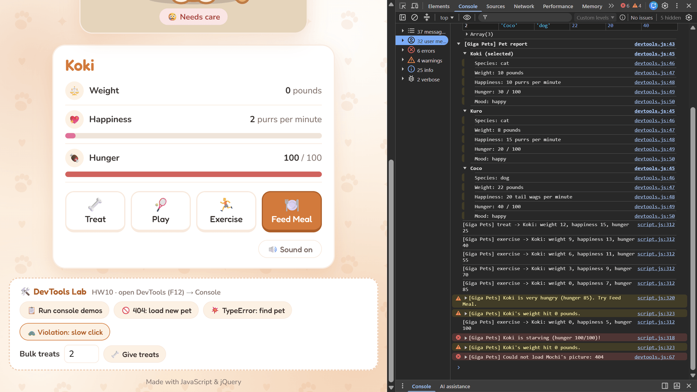
I added a Bulk treats feature. You type how many treats to give (1–10) and press 🦴 Give treats. Each treat should add 1 pound, 5 happiness, and take away 5 hunger.
function clickedBulkTreatButton() {
var treats = $('#bulk-treat-count').val();
pet_info['weight'] = pet_info['weight'] + treats;
pet_info['happiness'] = pet_info['happiness'] + treats * 5;
pet_info['hunger'] = pet_info['hunger'] - treats * 5;
...
}
With Koki at 10 pounds, I gave 2 bulk treats. The weight should be 12, but the page shows 102 pounds. Happiness and hunger change correctly, so the bug is only in the weight line.
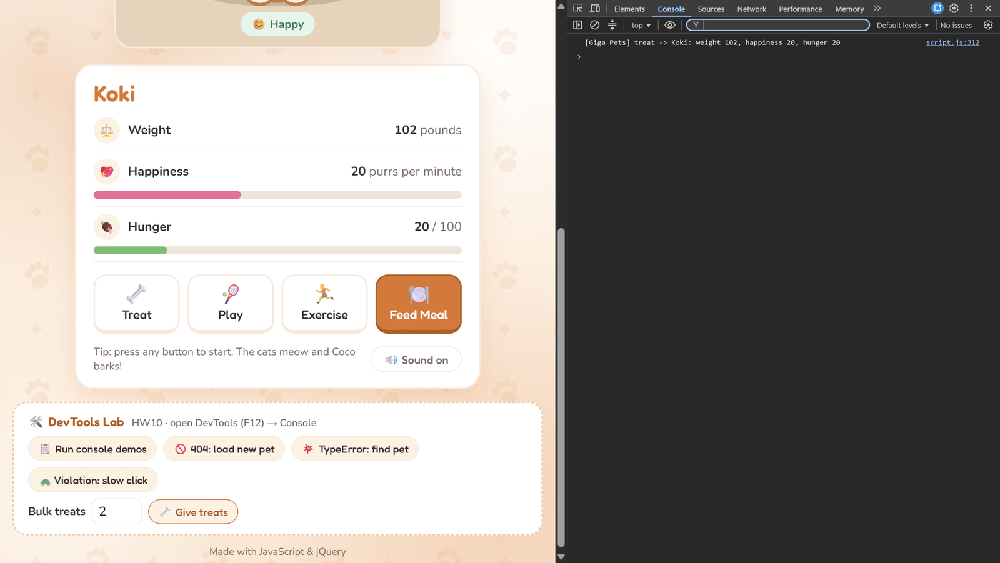
In Sources, I opened script.js from the Page tree and clicked the line number of
pet_info['weight'] = pet_info['weight'] + treats; to add a breakpoint.
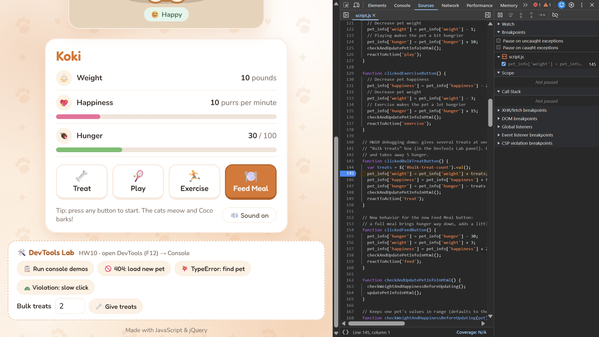
Clicking Give treats again paused the code on the breakpoint. In the Scope pane, under Local, treats shows as "2" in quotes.
It is a string, because jQuery's .val() always returns the input's text.
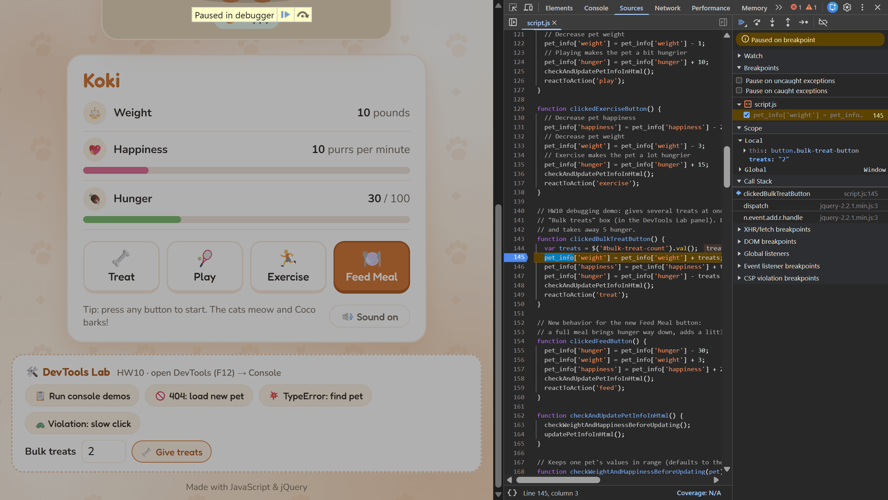
treats = "2" (a string).I added the watch expressions typeof treats (shows "string") and pet_info['weight'] + treats (shows "102").
They show that + is joining the two values as text instead of adding them.
The happiness and hunger lines work because * converts the string to a number.
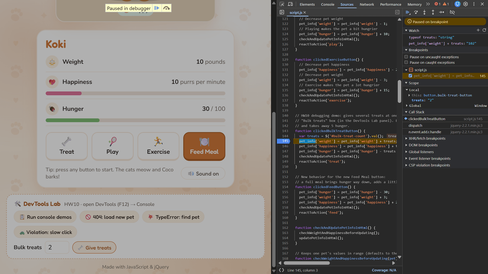
While the code was paused, I pressed Esc to open the Console drawer and ran expressions in the paused scope:
pet_info.weight + treats → "102", and pet_info.weight + Number(treats) → 12. This confirmed the fix before I changed the file.
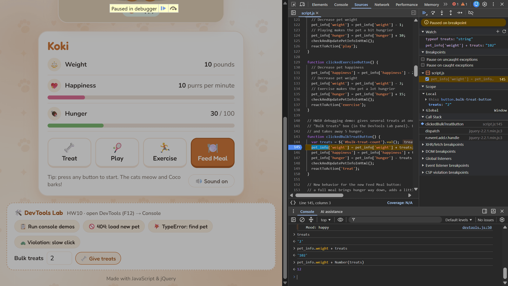
The fix converts the input value to a number when it is read, so every line after it does real math:
var treats = Number($('#bulk-treat-count').val());
I edited the line in the Sources panel, saved it with Ctrl+S, and resumed the code. Then I made the same change in script.js in the repository.
After reloading, giving 2 treats to Koki at 10 pounds shows 12 pounds, which is correct.
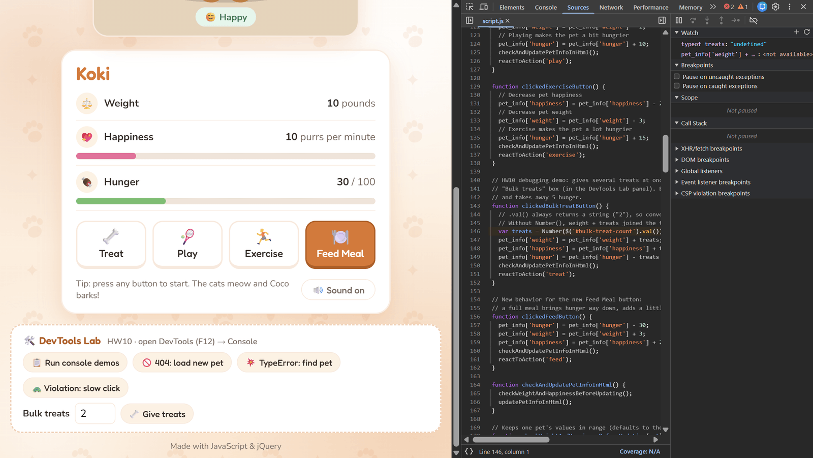
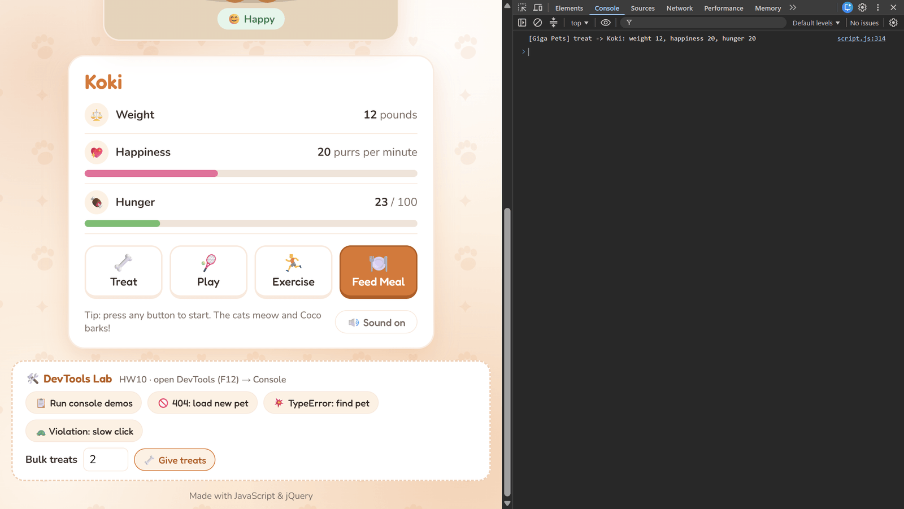